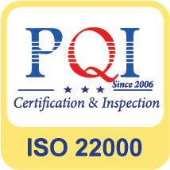

Giải pháp hợp tác toàn diện
Từ ý tưởng đến sản phẩm dinh dưỡng hoàn thiện
AMM không chỉ là đơn vị sản xuất. Chúng tôi đồng hành cùng đối tác xây dựng sản phẩm có cơ sở khoa học, phù hợp định vị thương hiệu và sẵn sàng thương mại hóa.
Đồng hành đúng nghĩa
Mỗi dự án bắt đầu từ mục tiêu kinh doanh của đối tác
AMM cùng doanh nghiệp làm rõ đối tượng sử dụng, phân khúc, lợi ích dinh dưỡng và lộ trình sản phẩm trước khi bước vào giai đoạn công thức.
Từ nền tảng R&D, nguồn nguyên liệu chọn lọc và năng lực sản xuất, giải pháp được xây dựng theo hướng cân bằng giữa khoa học, trải nghiệm sử dụng, chi phí và khả năng mở rộng.
- Bảo mật định hướng sản phẩm và dữ liệu dự án.
- Tùy chỉnh theo phân khúc, quy cách và chiến lược thương hiệu.
- Kết nối trực tiếp R&D – QA/QC – sản xuất trong cùng hệ thống.

Mô hình hợp tác
Linh hoạt theo từng giai đoạn phát triển
Từ thương hiệu mới đến doanh nghiệp đã có hệ thống phân phối, AMM thiết kế phương án phù hợp với nguồn lực và mục tiêu riêng.
OEM theo yêu cầu
Sản xuất theo công thức, tiêu chuẩn và quy cách đã được hai bên thống nhất; kiểm soát nhất quán qua từng lô.
Xem quy trình →ODM phát triển trọn gói
Đồng hành từ nghiên cứu nhu cầu, xây dựng công thức, mẫu thử, hoàn thiện hồ sơ đến sản xuất thương mại.
Năng lực công thức →Nhãn hàng riêng
Tư vấn định vị sản phẩm, danh mục, quy cách bao bì và kế hoạch phát triển theo kênh phân phối.
Nhận tư vấn →Danh mục có thể phát triển
Nền tảng cho nhiều định hướng sản phẩm
Danh mục được nghiên cứu theo đối tượng sử dụng, mục tiêu dinh dưỡng và khả năng ứng dụng của dây chuyền.

Sữa bột dinh dưỡng
Trẻ em, người trưởng thành, người cao tuổi và nhu cầu chuyên biệt.

Sữa nước & đồ uống dinh dưỡng
Ứng dụng chế biến UHT và chiết rót vô trùng Tetra Pak.

Giải pháp miễn dịch
Ứng dụng Colosferrin®, Lactoferrin, IgG và vi chất phù hợp.

Sản phẩm theo nhu cầu riêng
Tăng trưởng, tiêu hóa, não bộ, xương khớp và kiểm soát đường huyết.
Quy trình hợp tác
Rõ từng bước, kiểm soát từng điểm chạm
Mỗi dự án được tổ chức theo các mốc thống nhất để đối tác theo dõi tiến độ, ra quyết định và kiểm soát chất lượng.
Tiếp nhận nhu cầu
Làm rõ khách hàng mục tiêu, định vị, dạng sản phẩm và quy mô dự kiến.
Đề xuất giải pháp
Tư vấn hướng công thức, nguyên liệu, quy cách và phương án triển khai.
Phát triển mẫu
Thử nghiệm, đánh giá cảm quan và tối ưu theo phản hồi của đối tác.
Hồ sơ & bao bì
Hỗ trợ chuẩn bị chỉ tiêu, nội dung kỹ thuật và các hạng mục liên quan.
Sản xuất & bàn giao
Kiểm soát lô sản xuất, thành phẩm, lưu mẫu và hồ sơ truy xuất.
Nền tảng đồng hành
Giá trị nằm ở khả năng kết nối toàn hệ thống

Hệ thống chất lượngQuản lý an toàn thực phẩm theo ISO 22000:2018.
Nền tảng chế biến và chiết rót vô trùng cho sữa nước.
Colosferrin® từ Ingredia, Pháp và hệ nguyên liệu có nguồn gốc rõ ràng.
Tăng cường nền tảng an tâm cho dự án và người tiêu dùng.
Hãy bắt đầu từ ý tưởng sản phẩm của bạn
Đội ngũ AMM sẵn sàng cùng đối tác xác định hướng đi phù hợp và xây dựng lộ trình triển khai khả thi.